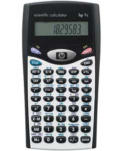

WebCal 計數機網頁
HP 9S簡介

HEWLETT PACKARD HP 9S是一部香港會考的准用計數機 之一，輸入方法為代數邏輯(Algebraic Logic)，與傳統舊款式 Casio fx-50F相似。這部計數機功能不算多，除了沒有程式功能外，亦沒有好像fx-50F的內置程式庫(例如: 一元二次方程)及科學常數功能，甚至線性回歸功能都沒有，不過與fx-50F比較，這部計算機有以下較特別的功能:
˙六種公制單位轉換功能
˙統計計算有製程能力指數 (Process Capability)
˙輸入的統計數據可以保存及進行編輯
˙有複數模式，計算複數的四則運算較方便
1. HP 9S 說明書 (英文)
2. HP-9S 訓練模組 (英文)
3. 其它計數機簡介
4. 如何選購會考計數機
6. 聯絡WebCal網主